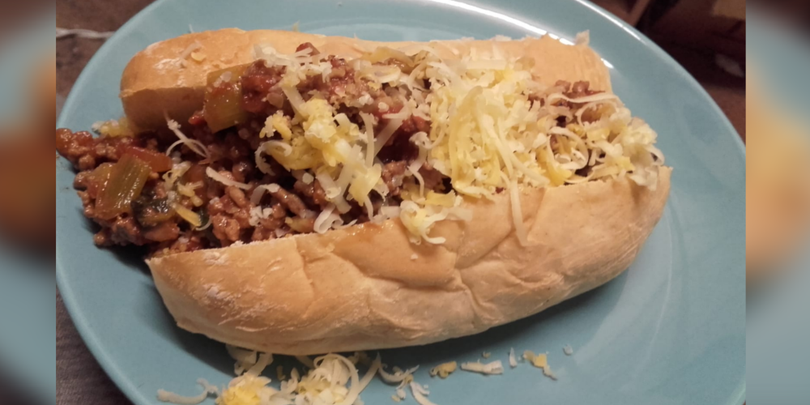

Chilli Dogs
Chilli dogs are a great way to add some simple spice to your life, while simultaniously enjoying something as average as a hot dog. Feel free to experiment when it comes to spice, it's something that some people love and can take really well, but for some it's the bane of their foodie experiences, and that's fine! Experiment with the peppers and mildness of your chilli to find a perfect balance, you won't be disappointed!
- Serves: 4
- Preperation time: 15 minutes
- Cooking time: 30 minutes
You will need:
- 1 large saucepan
- 1 medium saucepan
- A mixing spoon
- A sieve
- 1 sharp knife
- 1 bowl
Ingredients
| Ingredient | Quantity |
|---|---|
| Water | 3 cups |
| Hot dog sausages | 1 can/8 sausages |
| Hot dog buns | 8 rolls |
| Onion | 1 medium |
| 5% fat beef mince meat | 500g |
| Chopped tinned tomato | 1 can |
| Garlic | 1 clove |
| Chilli pepper | 2 medium |
| Salt and pepper | 1 pinch each |
| Oil | 1-3 tbsp |
| Optional ingredients | Quantity |
| Spring onions | 2-4 stalks |
| Cheese | A handul, grated |
*Spring onions should be used as an alternative for normal onions, rather than alongside them, for people who don't like the flavour of onions as much as others
Method
- Step 1
- Prepare your ingredients; slice up the onions, chilli, and mince the garlic.
- Step 2
- Place the larger saucepan over a high heat and add some oil. Add the mince meat and fry until there are no, or very few, raw spots. Drain the oil as needed.
- Step 3
- Add the chopped onions and chilli peppers to the saucepan, turn to a medium heat, and fry until the onions have become translucent, then add the garlic and mix well.
- Step 4
- Add the can of chopped tomatoes to the saucepan and allow it to come a boil. Add salt and pepper to your liking.
- Too spicy!
- If you feel your chilli is too spicy, try adding a pinch of sugar! Sugar neutralizes the spice, making the chilli milder. This can also be used when you've eaten something too spicy, just put a teaspoon of sugar in your mouth and swill it around for a few minutes.
- Step 5
- Allow the chilli to reduce in the large saucepan. Meanwhile, add water to the medium saucepan, bring it to a boil over a high heat, and add your hot dog sausages.
- Step 6
- After about 10 minutes, your chilli should be reduced and your sausages should be heated through. Carefully remove the hot dogs from the hot water through the sieve, and place them into the hot dog buns. Transfer the chilli into the buns, on top of the sausages, and serve, maybe with some grated cheese on top.